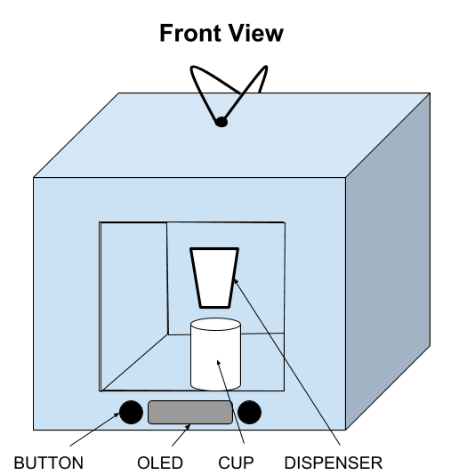
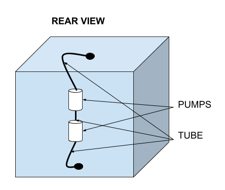

What is Automated Boba Dispenser?
Fig.1 Automated Boba Dispenser
The dispenser is a fully
autonomous system that will take a customer/user’s choice of bubble
tea from various options (i.e. Milk Tea, Strawberry Milk Tea, etc.),
and dispense the drink into an appropriate-sized cup. The
product will be constructed from durable materials that have been
laser cut to ensure proper fitting. The bubble tea will be dispensed
from a built-in reservoir, along with the tapioca balls, through a
system of pumps connected via food-grade silicone tubes. A Raspberry
Pi will be used as the microcontroller controlling the machine’s pumps
and on-board electronics, such as the OLED display. The Pi will also
execute a Python script to communicate with the various peripherals
to properly dispense the user’s chosen drink.
Motivation
This project aims to provide bubble tea store owners an alternative
to their manual labor force in a rapidly expanding market. As of
2016, the global bubble tea market was valued at $1.9M and is
projected to reach $3.2M by 2023 (Allied Market Research). The
increasing demand for bubble tea will consequently cause a rise in
the demand for workers in the tea industry, which may cause a
shortage in the labor force. To relieve the strain on the workers,
as well as business owners hiring these workers, this project will
automate the process of serving bubble tea to customers.
Learning Objectives
- Design and construct a form factor for the dispenser
- Requires the use of Inkscape for laser cutting, SolidWorks
for 3D printing and designing, and workshop for the assembly
of the dispenser’s case.
- Design the power system for the dispenser
- A fundamental knowledge of AC/DC power systems is necessary
to safely and efficiently supply power to the dispenser and
all of its peripherals.
- Develop a Python program for the dispenser via Raspberry Pi,
liquid pumps, etc.
- Members will learn about Pi development through connecting
sensors and motors to the Pi, and also sharpen their software
knowledge of Python to program the Pi to act as the
dispenser’s primary controller.
Fig.2 Automated Boba Dispenser
Engeering Software
- Inkscape
- Used to construct various frame components such as
platforms, walls, etc.
- SolidWorks
- Developed 3D models of the dispenser and boba scooping
mechanism for 3D-printing and assembly.
- Arduino IDE
- Used to develop, test, and debug code for the
Arduino-controlled boba scooper.
- Python (2.7)
- Sole programming language used with the Raspberry Pi to
control the system’s pumps, OLED display, and control logic
associated with operation.
Cost & Budget
 Fig.3 Bill of Materials
Fig.3 Bill of Materials
Schedule
 Fig.4 Gantt Chart
Fig.4 Gantt Chart
Above is a Gantt chart for our team’s project. This served as an
outline of events that we intended to complete on or before the
specified dates on the chart. This was in order to make sure
the project was completed by the deadline.
Build Steps
Building the Frame
- From a 13 inch block of 0.75”x 1.5” common wood, saw the
following portions:
- 4 x 16” blocks
- 6 x 7.5” blocks
- 4 x 9” blocks
-
Screw 2 of the 16” blocks with 2 of the 7.5” blocks to make the
sides of the dispenser frame.(Figure 5.1)
- Repeat this process one more time to have two frame pieces
for the dispenser.
- It is helpful to drill plot holes before screwing in wood
screws to prevent the wood from cracking.
- Use four 9” blocks to connect the two frame pieces together from
the top and bottom.
- Connect two more 7.5” blocks for the drink platform (Figure 5.1).
- Measure 3” from the bottom of the frame and screw
the 7.5” blocks at the mark.
Mounting and Wiring Electronics
- Refer to the wiring schematic for all steps in this section
(Figure 8).
-
After deciding where each electronic component will be placed, begin
by connecting the 12 volt power supply to Power Display Board (PDB).
- You will be connecting a wire (red) that signifies a positive
power connection to P1, and another wire (black) that signifies
a GND connection to P2 (Figure 5.2).
-
Make sure to use the Sortie positive and negative(GND) inputs
of the power supply (Figure 6).
Fig.6 Power Supply---Transformer
-
After successfully connecting the power supply to PDB, you will then
connect the pumps to the PDB. First connect two wires to PDB’s P1
input, which will be for each pump’s positive ended pin.
-
Two GND wires will then be connected to two channels of the 8
channel relay(check schematic for respective pin allocations).
-
The pumps will need soldering for the GND and positive wire, as well
as the 1N4007 diode. This diode will be soldered between the two
wires for each pump, making sure the grey line of the diodes are
facing the positive side of the pumps.
-
Proceed by connecting the 8 channel relay to Raspberry PI 3
(or zero). Pin wiring can be seen on electronic schematic.
Fig.7 Eight channel relay
-
Next, the 5V regulator will be connected from power supply to
Raspberry Pi and 8 channel relay (Figure 7). The positive and
GND inputs of 5V regulator will be connected to the respective
pins of the PDB. The positive and GND outputs will then be connected
to 8 channel relay and Raspberry (Figure 8).
-
In order to successfully connect the 5V regulator, soldering must
be done for each input and output with their respective wiring.
Secondly, an additional wire must be soldered to the positive
output of 5V regulator to make a second connection to Raspberry Pi,
also known as a SPLICE.
Fig.8 Schematic
-
Next, check schematic for final pin wirings of OLED screen and buttons.
-
Finally, powering the system will require a computer cable. This
cable will be cut to where the three inner wires are able to be
inserted into the power supply inputs. Please check resources for
color coordination to successfully power on the electronic system.
Software
-
Create the Python scripts (https://github.com/jinwu0408/Automated-Boba-Gadget)
-
Configure inputs and outputs according to what pins used on the
Raspberry Pi (Bartender.py -> function initial)
-
Make a menu of all the drinks with their ingredients included
(drinks.py)
-
Create a script that implements the buttons and pumps (Bartender.py)
-
Pressing one button cycles through the menu so that there is only
one drink displayed at a time (function next_item)
-
Pressing the other button enables the pumps and motor for the boba,
dispensing it into the drink (function dispense)
-
Create a script that updates the OLED display screen with the current
menu item (updateDisplay)
-
Add a countdown timer on the OLED to display how much time before
the drink is finished dispensing
-
Test and debug
-
Final test run
-
Test the ABG from start to finish to ensure functionality
Visual

Fig.8

Fig.9
Fig.10